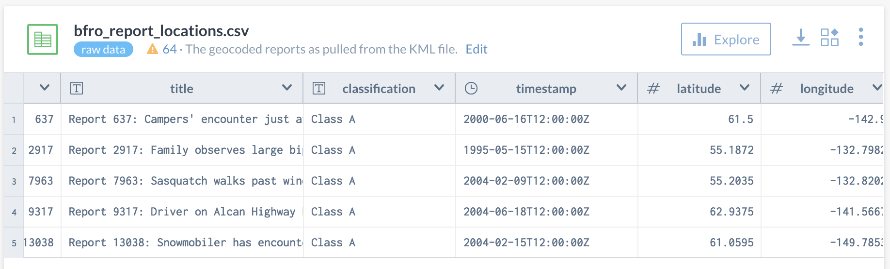
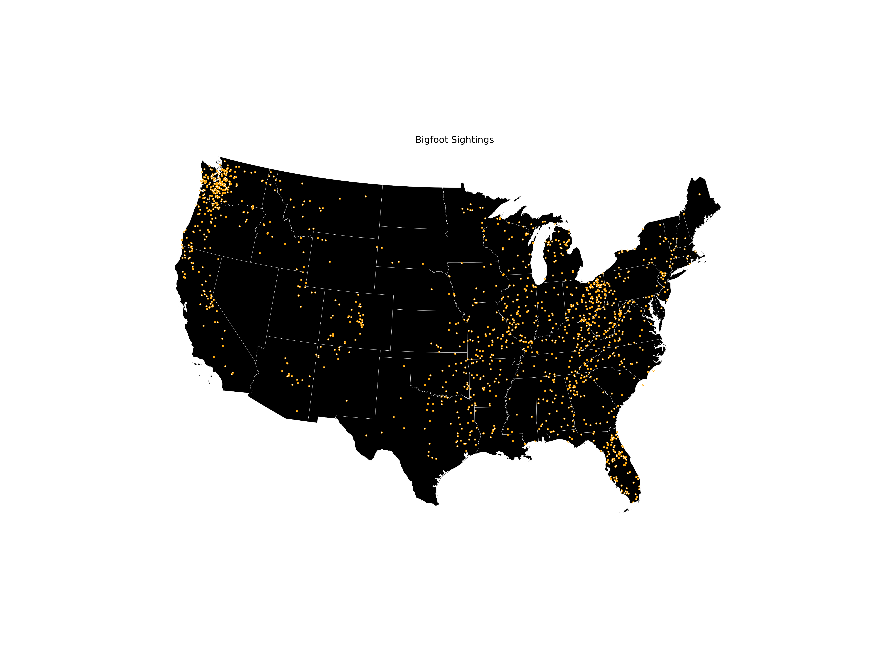
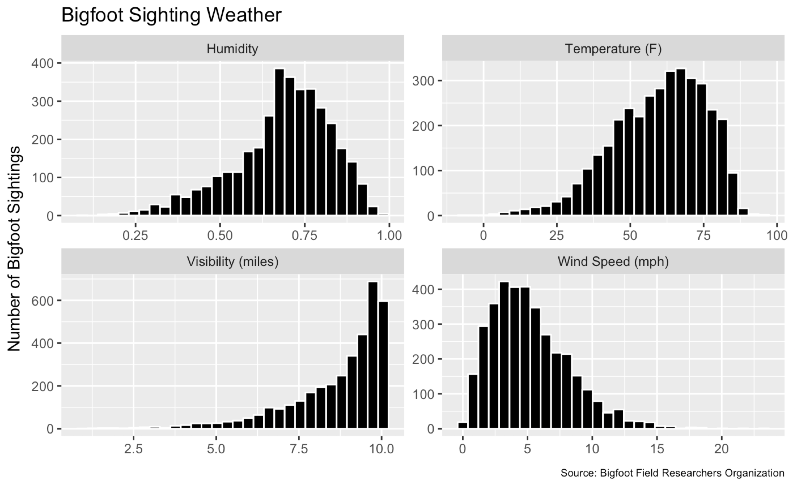
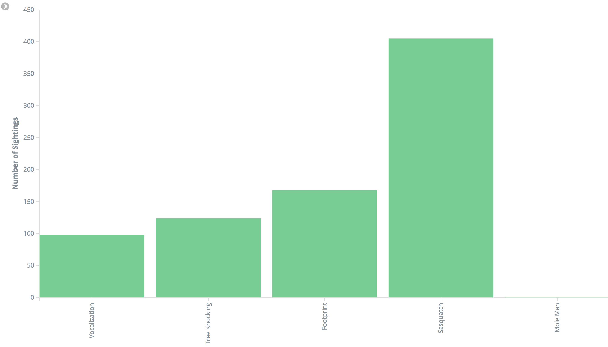

Questionable Data Science
Tim Renner
Aspiring Data Scientist Community, 6/27/2018
About Me
Machine Learning Engineer at HomeAway
Most popular repository implements an Onion article.
How does a business describe what data scientists do?
Kaggle Says
Transform raw data into problem solving insights.
How?
- Find data
- Build models
🤔
How Data Science Problems are Framed
Too vague - “We need insights about X.”
Too specific - “We need to predict Y.”
Way too specific - “We need to use X to predict Y.”
Predictions are not insights.

Predictions are tools.
Turning a wrench
is not
fixing a
broken car.

We don’t call
good mechanics
“ratchet ninjas”.

So why do we always fixate on making good predictions…

… instead of making the right prediction?
If my model makes a good prediction but predicts the wrong target, do I make any money?
🤔
There is no “right answer.”
All models are wrong, but some are useful.
- George Box
There is a “right question.”
Figuring out the right question helps us make the right prediction.

Congratulations!
You’ve just been hired as chief data scientist of the Bigfoot Field Researchers Organization.
What do you think your first project will be?
Your New Dataset

Can you build a model that will help people go squatchin?
Given a time and place in the future, will you see sasquatch?
Can we answer this question?

Do some locations
have a greater
likelihood of a
bigfoot sighting?
One Question, Many Answers
- Continuous
- Kernel density estimators
- Gaussian mixture models
- kriging
- Discrete
- Clustering (DBSCAN, HDBSCAN)
Both approaches answer the question.
Time + location = weather

What kind of weather does sasquatch like?
What will happen?

Tree knocking? Vocalizations? Mole Man?
All together
Does sasquatch tend to appear in this location?
Does bigfoot have climate / weather preferences?
What will you see?
What’s the target?
What do you want to know?
- What’s the likelihood I’ll see a sasquatch?
- binary classification
- negative examples random
- Will I hear vocalizations / tree-knocking, or see a footprint?
- binary classification on extracted value
- conditional on an encounter
Other Examples
Ranking documents
Recommending movies
Spam classification
Customer segmentation
Which document will you click?
Which movie will you watch?
Which email is junk?
Which customers are like you?
Get the question(s) right!
- Multiple uses of the data.
- No fixation on tools and techniques.
- Clearly communicates what a model does.
Conclusions
- Phrase the business objective as a question.
- Attempt to answer the question with data.
- Repeat until convergence.
It’s basically convex optimization.